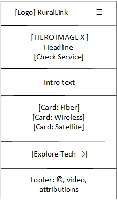
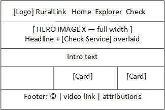

RuralLink Site Plan
WDD 231 Final Project Planning Document
Site Name
RuralLink: A Guide to Rural Broadband
- The name joins "rural" and "link." It describes the site's goal of connecting rural families and small businesses with the internet technologies that can reach them. "Link" is also a networking term for a connection between two points, such as a microwave or fiber link.
- Optional domain: rurallink-guide.org
Site Purpose
RuralLink is an information hub for people in rural areas who want to understand their internet options. The site will:
- Explain the rural digital divide and how internet service reaches homes that are far from town.
- Provide a Technology Explorer that lists fiber, fixed wireless (CBRS), microwave, satellite, cellular, and other broadband technologies. Each one shows its typical speed, range, latency, and best use case, and visitors can filter the list and open details.
- Offer a "Check Service" request form where visitors describe their location and needs so they can receive guidance on the best option.
Scenarios
- I live on a ranch 15 miles from town. What kind of internet service can actually reach my home?
- What is the difference between fixed wireless and satellite internet in speed and latency?
- Which technology is best for a small business that needs video calls and cloud applications?
- How can I ask for help finding out which service is available at my address?
Color Scheme
The colors are inspired by telecom infrastructure: a night sky, signal teal, and the amber of a tower beacon light. All text and background pairs meet WCAG AA contrast.
-
#0B2545
Primary, Navy: header, footer, navigation bar background, and h2 headings.
-
#0E6E77
Secondary, Signal Teal: buttons, links, h3 headings, card borders, and the active navigation link.
-
#F29E4C
Accent, Beacon Amber: hover and focus states, header border, and highlights on dark backgrounds only.
-
#F4F7F9
Background, Light Gray: page background behind content cards.
-
#1F2933
Text, Charcoal: paragraphs and body text.
Typography
Montserrat (Google Fonts)
Used for the site name, headings (h1–h3), navigation links, and buttons. It is a strong, modern sans-serif that looks technical and clear.
Connecting Rural Communities
Open Sans (Google Fonts)
Used for paragraphs, card details, form labels, and the footer. It is highly readable at small sizes on mobile screens.
Fixed wireless uses a radio link from a nearby tower to an antenna on your home, delivering broadband where fiber is not yet available.
Wireframe
Home page layout for small (mobile) and large (desktop) viewports.

